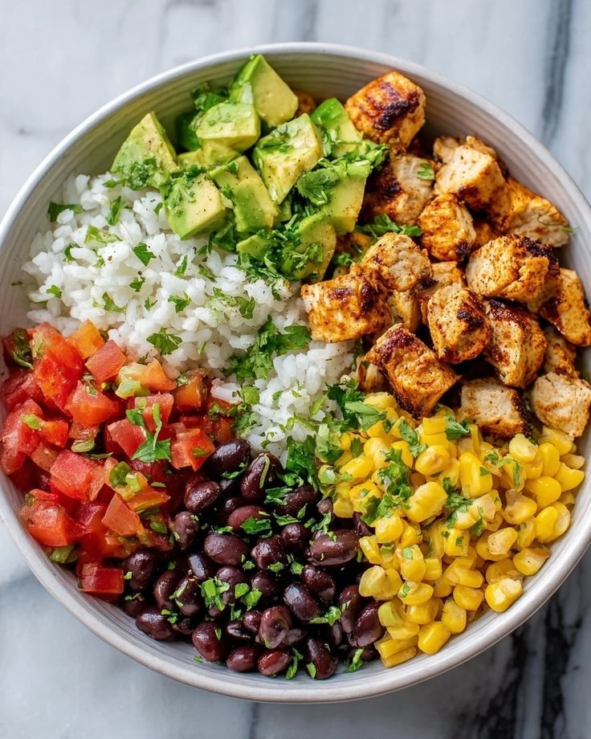

This flavorful One Pan Rice Chicken Bowl combines tender, seasoned chicken with sautéed vegetables, rice, black beans, and corn all cooked together in a single skillet. Perfect for a quick, hearty, and colorful lunch!
First things first, dice your chicken into bite-sized pieces and toss them with salt, cumin, chili powder, and garlic powder. This seasoning blend is the star that brings those authentic burrito bowl flavors alive. Don’t forget to chop your onion and bell pepper evenly so they cook at the same pace, and rinse those black beans thoroughly to remove any canned flavors for a fresh taste.
Heat two tablespoons of olive oil in a large skillet over medium-high heat. Add your seasoned chicken pieces and sauté them until they’re golden brown and cooked through, about 5 to 7 minutes. This step not only seals in juicy flavor but creates a lovely caramelized crust that adds texture to every bite.
Once the chicken looks perfectly cooked, toss in your diced onion and bell pepper. Sauté them for about 3 to 4 minutes until they start to soften and release their natural sweetness. Next, stir in the rice, black beans, and corn.
Pour in 1.5 cups of water or chicken broth, and bring the pan to a boil. Once boiling, reduce the heat to low and cover the skillet with a lid. Let everything simmer and gently cook for around 15 to 20 minutes, or until the rice is tender and has absorbed all the flavorful liquid.
When the rice is perfectly cooked, fluff it with a fork to keep it light and airy. Squeeze fresh lime juice over the dish for a bright, tangy punch that lifts all the flavors. Finish by sprinkling chopped cilantro on top and adding any optional toppings like creamy avocado, shredded cheese, cool sour cream, or spicy jalapeños.